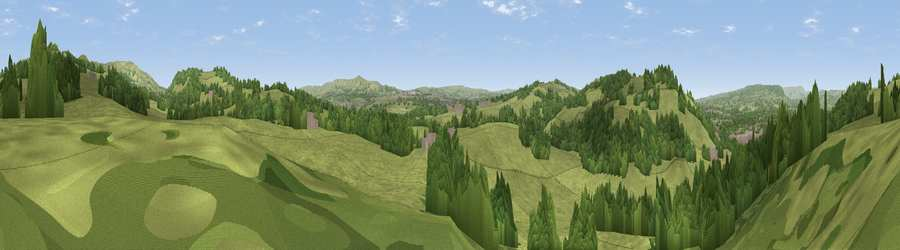

Viewpoint near Whalley
#27748 in England · top 70% of its area beats it · near Whalley · path 209 mWhere it is
The exact computed spot (SD 74575 35475). Click the marker for map links.
Public access: the nearest public right of way is about 209 m away — the final stretch may cross private land. Computed from Natural England's CRoW access layer and OpenStreetMap rights of way — not the legal definitive map. Always verify locally.
The view, rendered

A 360° render of this exact spot computed from the terrain model, tree cover and land cover — summer colours, afternoon light, calibrated against photographs of famous viewpoints. Real trees, hedges and buildings will differ in detail.
The panorama
Grey silhouette: terrain skyline in each direction (720 bearings, Earth curvature and refraction included). Dashed green: skyline with trees (+15 m) and buildings (+8 m) as obstacles. Blue strip: how far the ground is visible on each bearing.
Where the view opens
Wedge length = distance to the farthest visible ground on that bearing (vegetation-aware). Rings at 10, 25 and 50 km.
What fills the view
68% grassland · 30% woodland · 2% built-up
Angular shares of the visible panorama (visual magnitude), not map area. Landscape diversity 0.32 (0–1 Shannon).
Key numbers
More beautiful places nearby
The staircase of upgrades: each row has a higher view potential than everything closer. Driving times are estimates from straight-line distance, calibrated against real road routing — check an actual route before setting out.
| Place | Direction | Drive | Score |
|---|---|---|---|
| Viewpoint near Wiswell | NNW · 1 km | ~3 min | 56.3 |
| Whalley Nab | W · 2 km | ~4 min | 65.9 |
| Wiswell Moor | NNE · 3 km | ~7 min | 71.8 |
| Viewpoint near Pendleton | NE · 6 km | ~13 min | 72.1 |
| Viewpoint near Downham | NE · 8 km | ~16 min | 75.3 |
| Pendle Hill | NE · 8 km | ~17 min | 76.5 |
| Darwen Hill | SSW · 15 km | ~27 min | 80.7 |
| Rivington Pike | SSW · 24 km | ~39 min | 81.9 |
53.81493, -2.38764 · source: screening · position refined by local search. Computed location — check access rights before visiting.